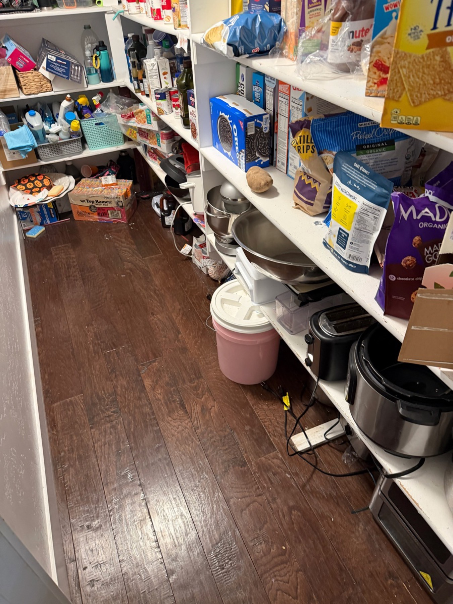
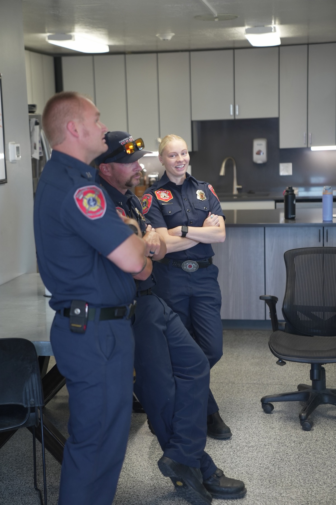
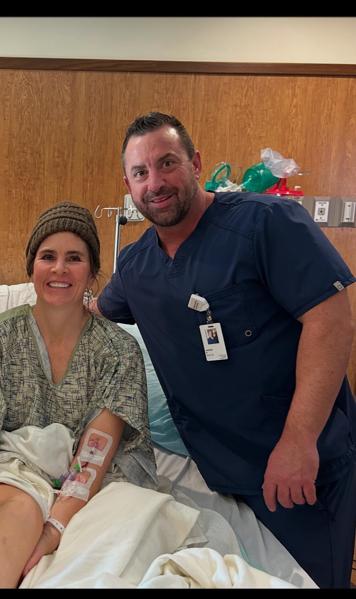
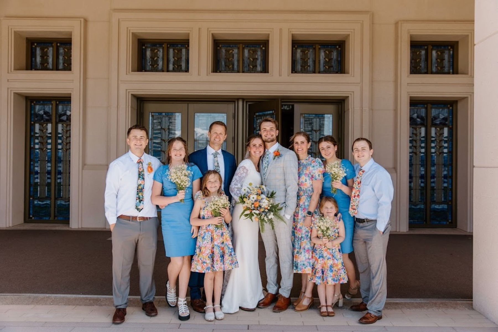
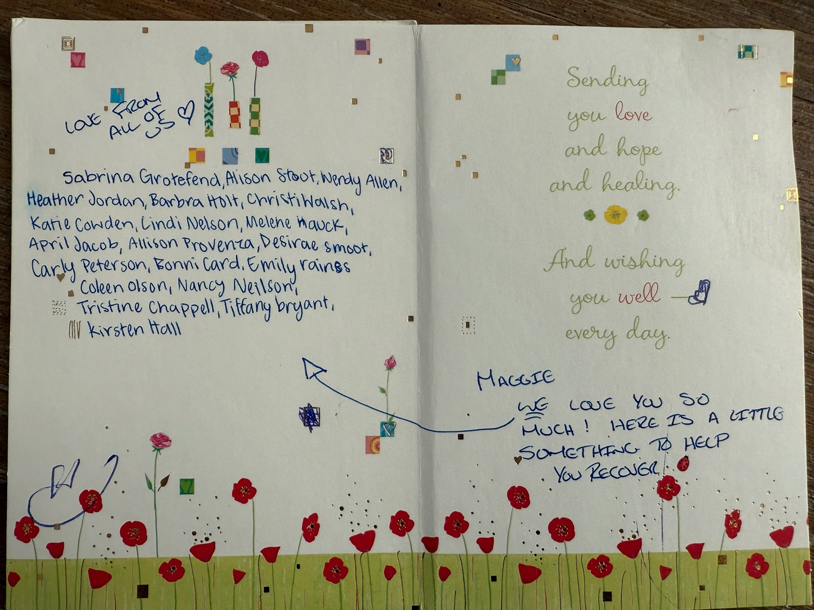
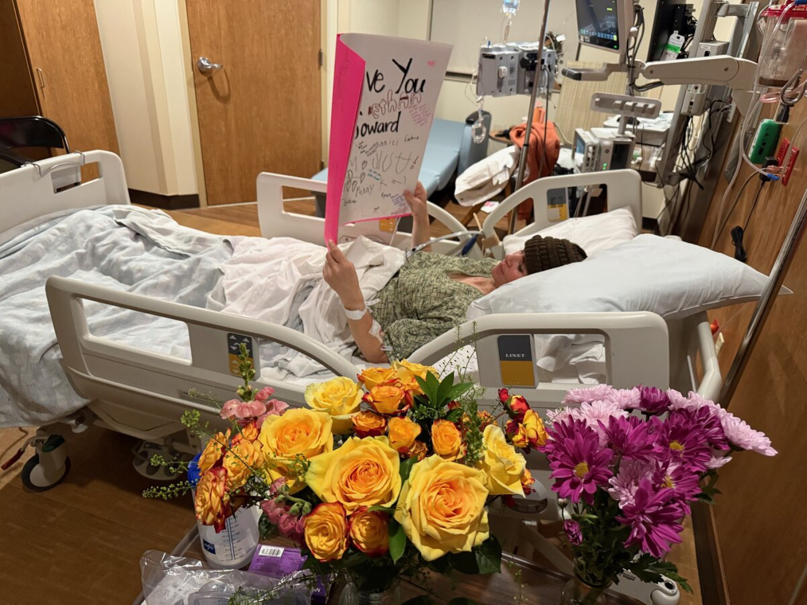
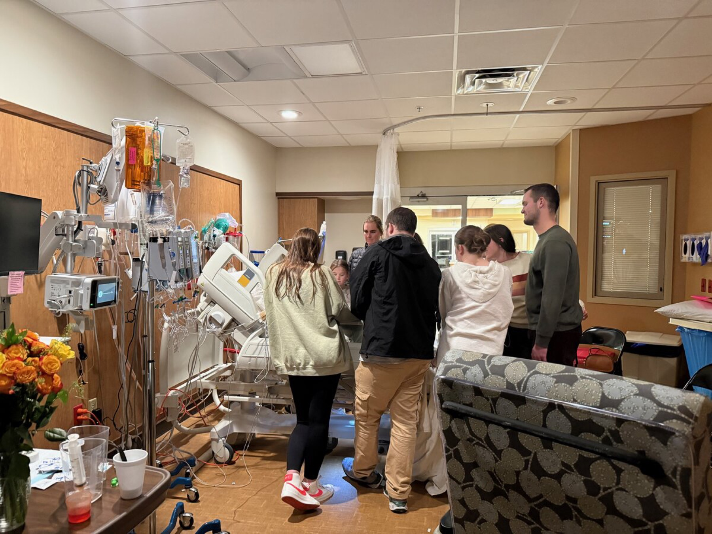
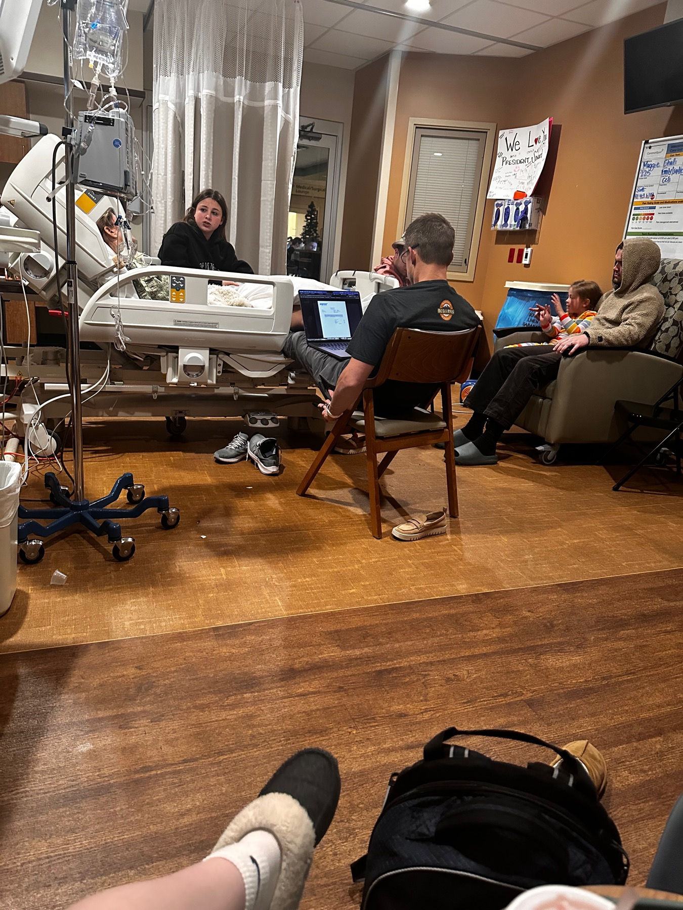

November 28, 2024 · Thanksgiving Day · Saratoga Springs, Utah
26 minutes without a pulse · A 5% chance · A family, a community, and the grace of God
butdidyoudie.life
Scott and Isaac spent the morning at Israel Canyon for Isaac’s rifle practice, then came home to prepare Thanksgiving dinner and pack for a Goblin Valley campout with the boys. Scott was in the kitchen researching Dutch oven soup recipes.
Around noon Maggie joined him in the pantry to pick out three large potatoes. Her Fitbit history would later show an elevated heart rate during those very minutes.

Maggie hands Scott the third potato, speaks those seven words, and collapses onto his left shoe.
Her fingers and toes twist in a seizure. Her face turns gray, her eyes roll back. Sudden cardiac arrest — ventricular tachycardia that became a full arrest within seconds.
Scott tells her over and over, “Breathe, Maggie.” He starts CPR and mouth-to-mouth and realizes there is no breath and no heartbeat.
Brain injury can begin within 4–6 minutes without circulation. From this moment, everything depended on what the people in that house did next.
Calls 911, hands Scott the phone so the dispatcher can count compressions, then shouts “She’s in here!” to guide responders to the pantry.
Yells “Eliza, Mom needs CPR!” then texts hundreds of people: “Please pray for my mom, we think she just had a heart attack.” He also gives Eliza the shirt off his back.
Runs downstairs in a towel from her shower, checks for pulse and breath, finds neither, and begins chest compressions — nearly five minutes of them.
Her compressions kept oxygenated blood moving to her mother’s brain through the most critical window of all — the minutes before anyone else arrived.
Nine first responders — EMTs, firefighters, and police — arrived within five minutes on a holiday. They slid Maggie from the pantry to the kitchen, moved the dining table, took turns on compressions, and delivered three shocks from the defibrillator while Scott and Eliza waited in the front room.
At 12:50 PM they found a weak pulse. Maggie was loaded onto a gurney, given an IV through the femoral artery, and rushed to Holy Cross Hospital – Mountain Point in Lehi.
Roughly 6% of out-of-hospital cardiac arrest victims survive to discharge without neurological impairment. Twenty-six minutes without a detectable pulse is far beyond typical survival times.
Paramedic Abby Walz (lead) · Captain Ryan Rackman · Captain Seis Wetherell · Firefighter/AEMT Alec Olsen · Engineer Ivan Radcliff · Engineer David Perry · Critical Care Paramedic Isaac Ostler · Firefighter/EMT Josh Cluff — with Deputy Chief Kenny Johnson and Saratoga Springs Police.
On a day most families are together at home, they were positioned, trained, and ready to answer the call in under six minutes.

Bishop Clint Nelson meets the family at the hospital. Scott anoints; the bishop seals the blessing with Ron.
Maggie raises her eyebrows, squeezes hands, and wiggles her toes on command.
Sedated and stubborn, she pulls out her own breathing tube, damaging her windpipe. She would whisper for weeks.
Defibrillator implanted at St. Mark’s. Discharged the next day. Eliza drove up to bring her parents home.
Sudden ventricular tachycardia progressing to cardiac arrest. MRI and echo later confirmed takotsubo cardiomyopathy.
The akinetic region — the part of the heart that had stopped working — shrank over the week. An ICD was implanted December 4 by Dr. Nannapaneni.
No significant neurological damage after 26 minutes without circulation. Physicians attribute that directly to immediate, continuous bystander CPR.
The cost was real: cracked ribs, a damaged arm, a damaged windpipe, a sling for weeks, and a new cocktail of heart medications. Scott’s note on day two was simply, “I think she’s gonna be OK.”

The first real conversation Maggie had after waking was with her sister Ingrid. She said she had spoken with her mother, Becky, who had died years before. She said she saw her brother Lars in the room with her. And she said she kept having the same dream — that she had died, and that she was told to go back.
Maggie attributes much of the help she received from the other side of the veil to those whose temple ordinances she had researched and performed.
When Maggie was five or six, her mother gave birth to a stillborn baby. Years later a sister told Maggie the rest of the story: her mother had sat in the temple, overwhelmed with grief, and felt a spirit sit beside her and comfort her. She knew distinctly that the child’s name was Eliza Jane.
Years after that, pregnant with her fourth daughter and already settled on the name Anna, Maggie sat across the table from her mother, who asked: “What about Eliza Jane?” Maggie knew instantly — without knowing the story — that this was her daughter’s name.

All through 2024 Maggie prayed two things: that if she died she would be allowed to come back, and that she would live to raise her children.
She got up from bed and walked to the pantry, then fell directly onto Scott’s left shoe. Alone anywhere else in the house, no one would have known.
Third CPR certification finished six days earlier — and mentioned in the car, so Scott knew to call for her.
Present at that exact moment to call 911, relay the dispatcher, and guide nine responders to the right room.
Hundreds of people praying within minutes, in a network of faith that stretched across states.
Close, available, and on scene in five to six minutes on Thanksgiving Day.
Waking in the ICU, Maggie knew there was something she was supposed to remember and could not. Before her defibrillator surgery, she asked Scott for a blessing. He said:
She knew instantly that was what she had been trying to remember. She texted her bishopric from the hospital and asked to speak in sacrament meeting — and one week after her heart stopped, in a whisper, she did.
Neighbors Heather Jordan, Kirsten Hall, and Tiffany Bryant came straight in and cared for the children while others waited outside. Hundreds fasted and prayed. Meals arrived, children were watched, cards were signed, and a ward that had once fasted for Maggie’s brother forty years earlier did it again for her.



“Every prayer offered, every meal brought, every child cared for, every tear shed, and every act of service became part of the miracle that brought Maggie back to us.”
Saratoga Springs Fire & Rescue and the city council recognized Eliza Jane Soward “in recognition for your outstanding contribution in demonstrating exceptional bravery and skill in saving the life of a family member within our community.” The crew who worked on her mother stood beside her.
July 31, 2025 — “Miraculous recovery: Saratoga Springs family recounts mother’s medical emergency, daughter praised for life-saving efforts.”
“Daughter’s Bystander CPR Saves Mother Thanksgiving Day” — featured in a professional medical publication as a model of bystander intervention.
“Hero daughter saves mom Thanksgiving” — international coverage carrying the story worldwide.
The family built butdidyoudie.life to honor everyone who participated in the miracle, to thank the community, and to press one point: learn CPR.

Eliza’s third recertification was six days old. Brain damage begins in 4–6 minutes. You may be the only person between someone you love and death.
A conversation in a car. A shoe. A son at home. A daughter’s name chosen in a temple decades earlier. None of it looked like preparation at the time.
Noah’s text took ten seconds and mobilized hundreds. Prayer was the family’s first response, not their last resort.
Neighbors in the house, meals at the door, a ward on its knees. The miracle was carried by ordinary people doing ordinary things immediately.
Learn CPR. Share the story. Seek and expect miracles.
Full story, photos, videos and testimonies → butdidyoudie.life
Scott, Maggie, Declan, Isabel, Isaac, Atziri, Noah, Eliza, Anna, Violet, and Sophia
Thank you for being part of Maggie’s miracle.